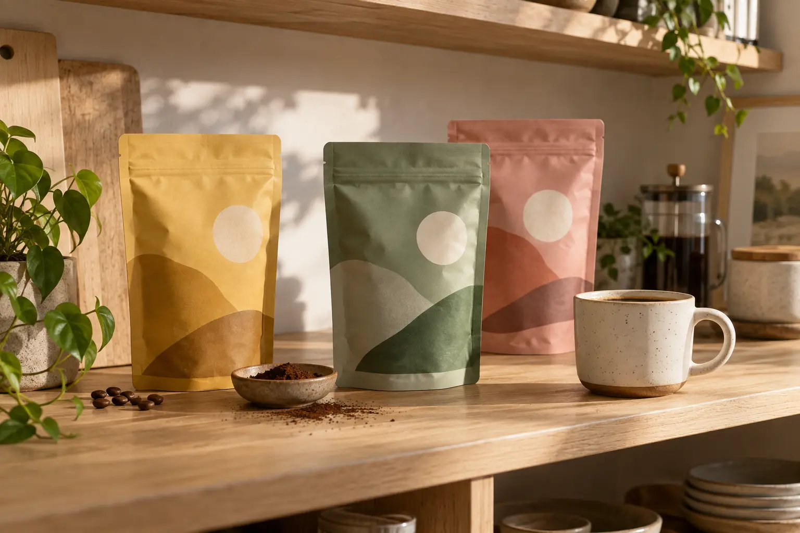
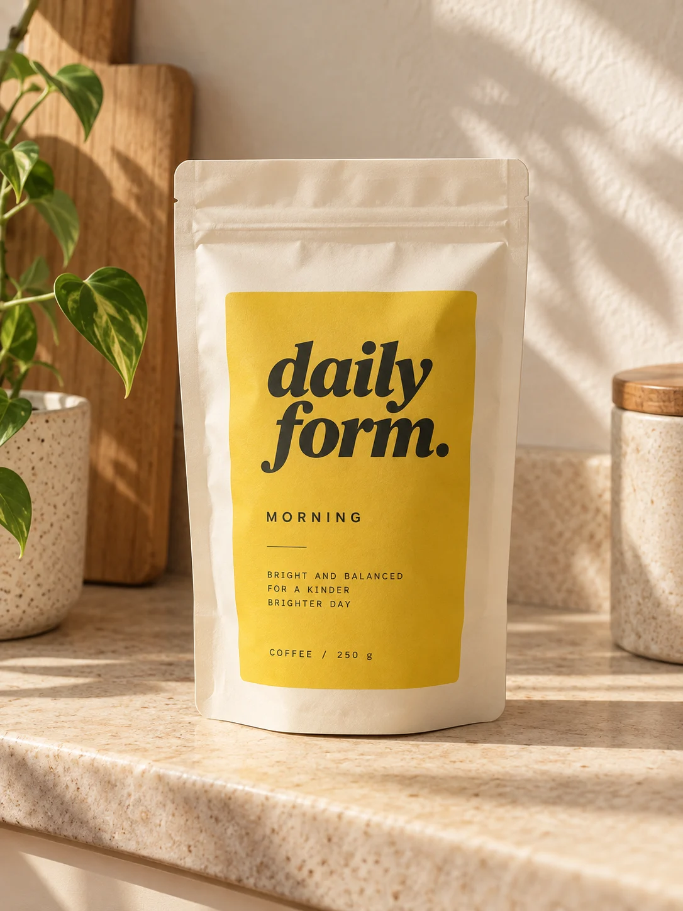
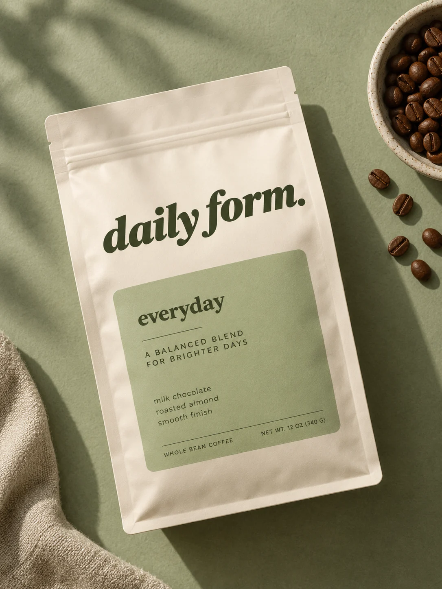
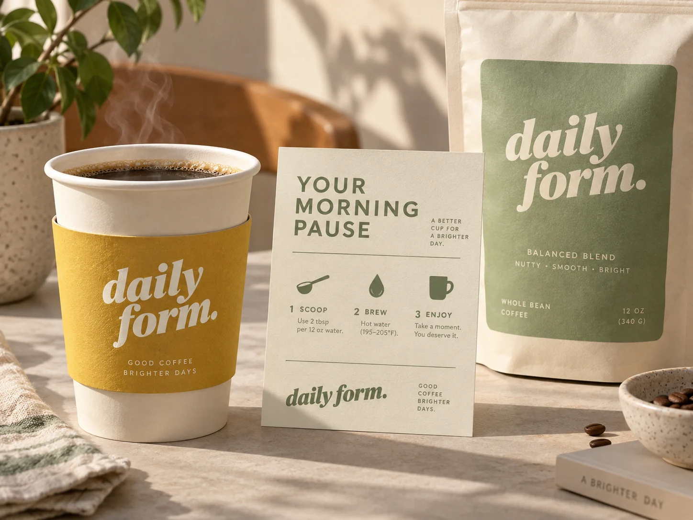
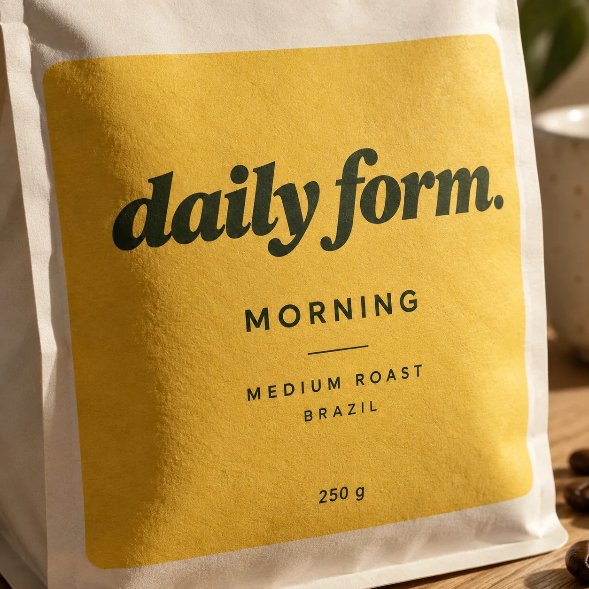
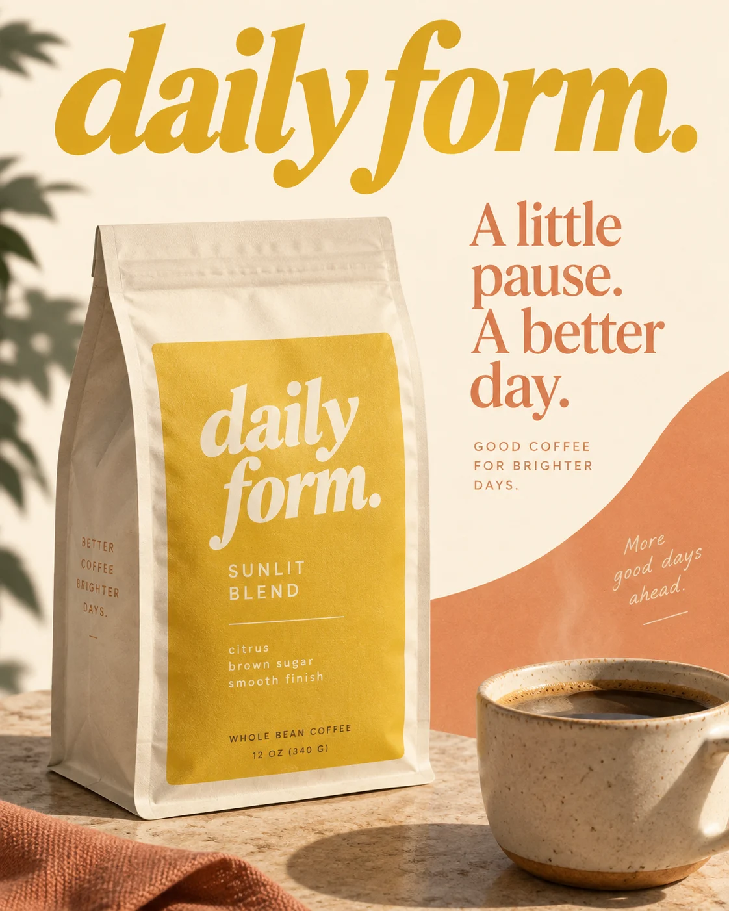
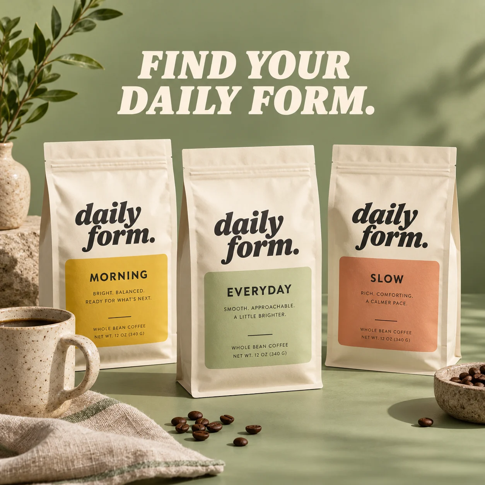
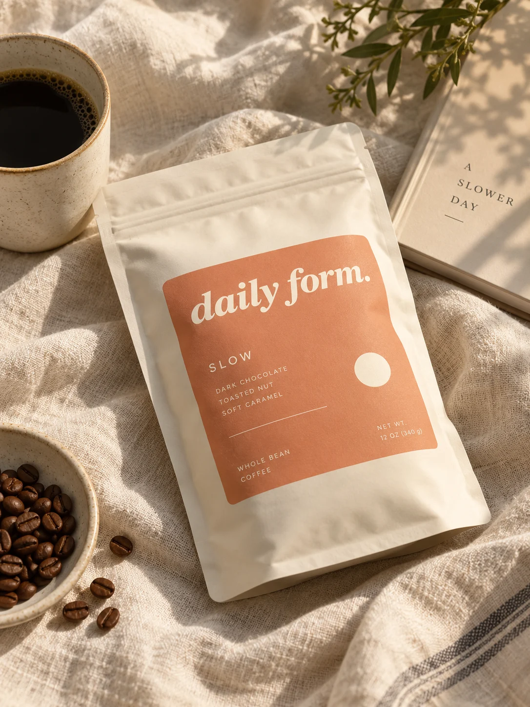
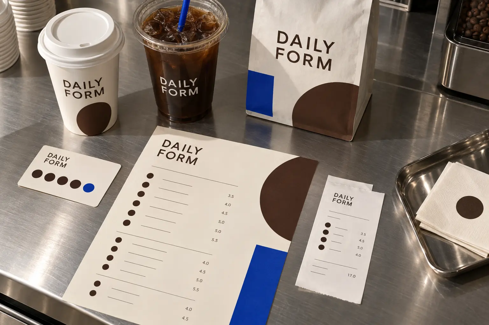
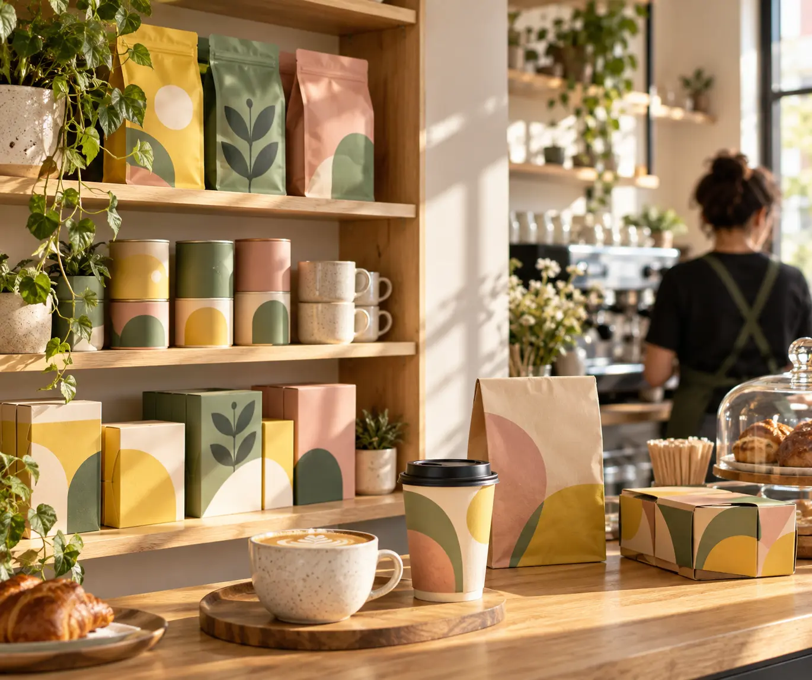

SLOW.
A calm campaign message for the first cup.
Good days take form.
Consumer identity / packaging / campaign
A coffee brand concept designed around the morning pause. The brief is to make choosing a blend simple, welcoming and visually memorable.
The idea: a flexible label system where colour identifies the blend and typography makes the essential information effortless.



Proposed coffee collection / packaging concept.

A warm display voice gives the name personality. Neutral supporting type organises roast, origin and brewing notes. A shared wordmark brings the collection together.
A little pause.
A better day.
Cups, brew cards and wrapping carry the same modular shapes without turning every surface into a logo panel.



A label panel folds into place, the blend name appears, then three colours switch in a calm sequence. Use soft easing and a short settling pause. End on the approved wordmark and ‘Good days take form.’
01 / Establish
Introduce the core graphic gesture.
02 / Develop
Build the typographic rhythm.
03 / Resolve
Return to the approved identity.
A label panel folds into place, the blend name appears, then three colours switch in a calm sequence. Use soft easing and a short settling pause. End on the approved wordmark and ‘Good days take form.’ Use the approved logo as a fixed composited asset; never regenerate its lettering. Master: 1920 × 1080, 25 fps, 12 seconds. Adaptation: 1080 × 1920. Deliver clean MP4 without interface graphics. This is a production direction, not a completed film.
Cups, menus, packaging and loyalty objects share one clear daily system.


Five warm, useful applications extend the coffee system across retail, print and everyday routine.
A calm campaign message for the first cup.
Each blend gets one clear number and color.
Useful preparation data becomes friendly graphic content.
A simple repeat mark rewards routine.
The brand voice scales into the café environment.
Role / Identity, art direction & motion direction
Independent brand concept